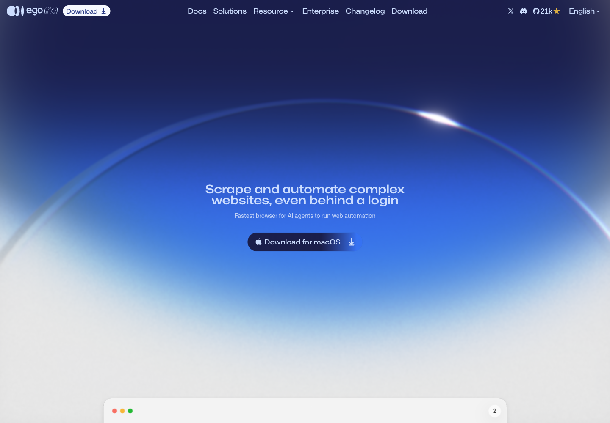
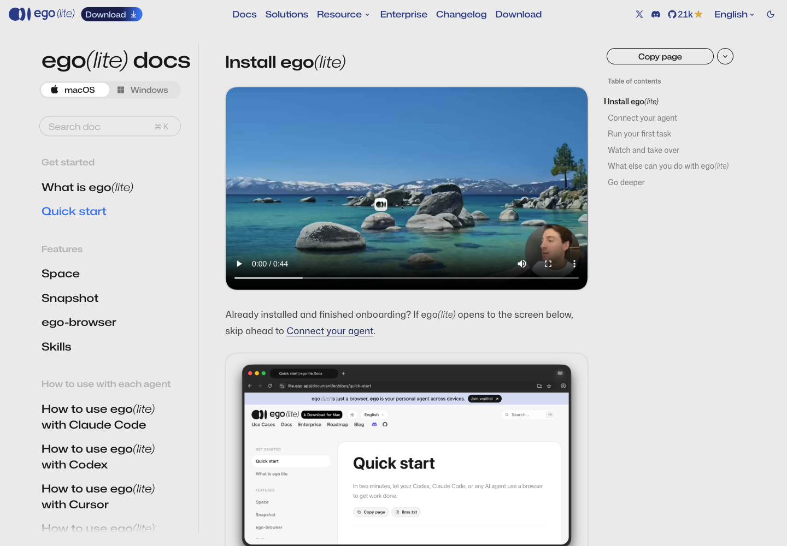
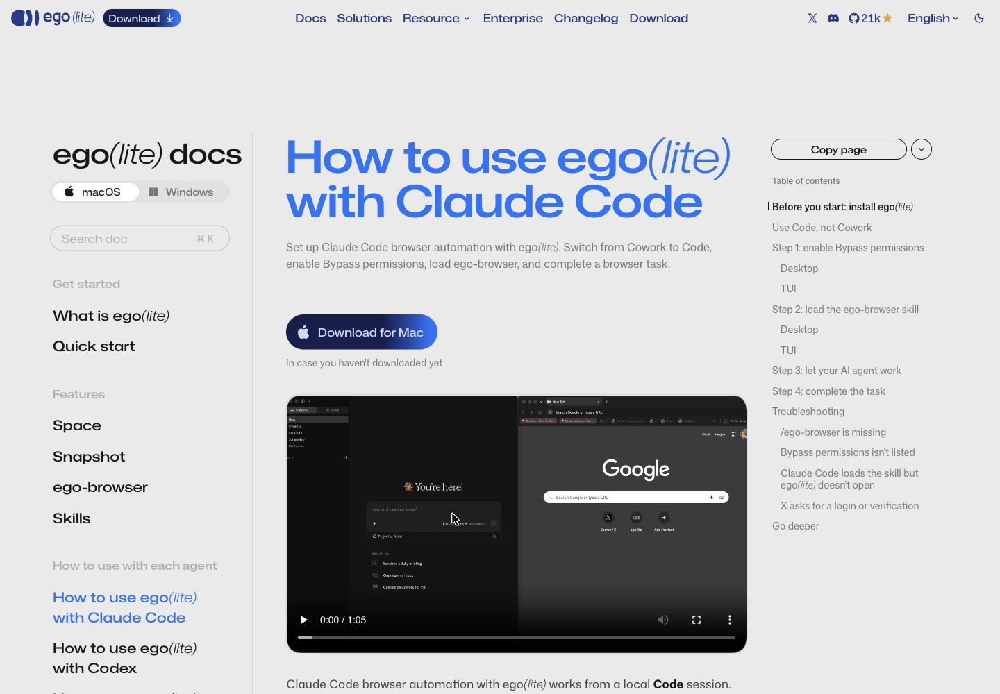
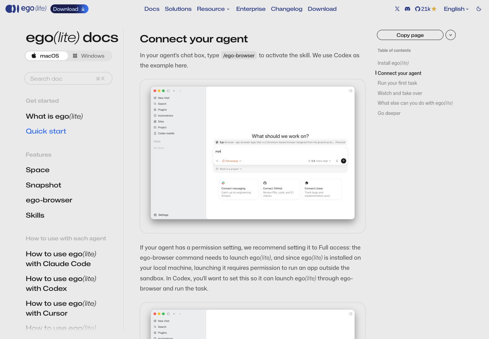
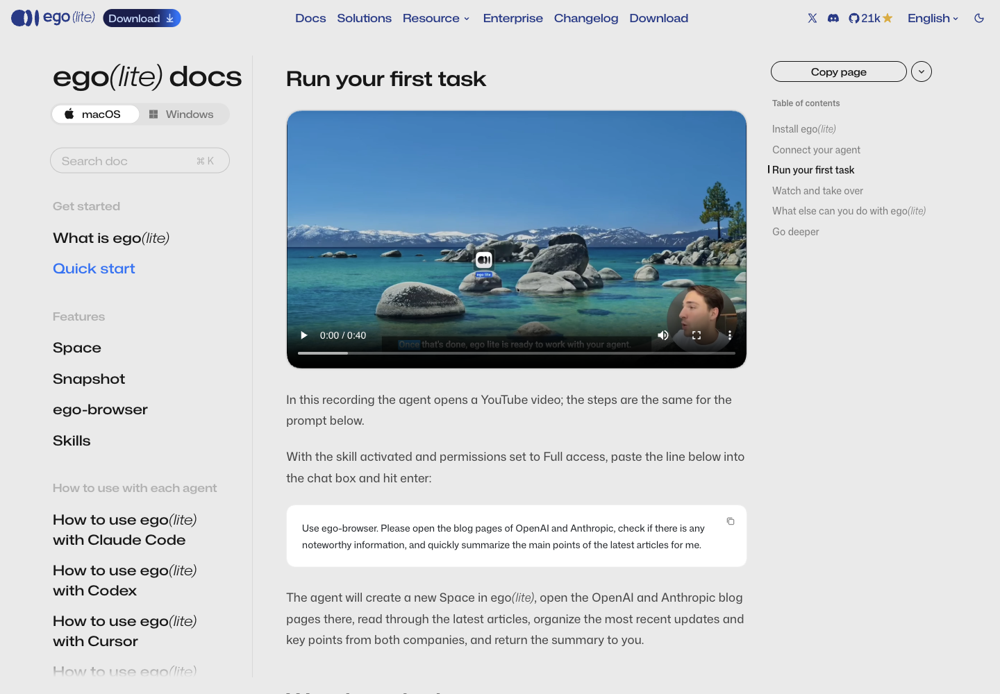
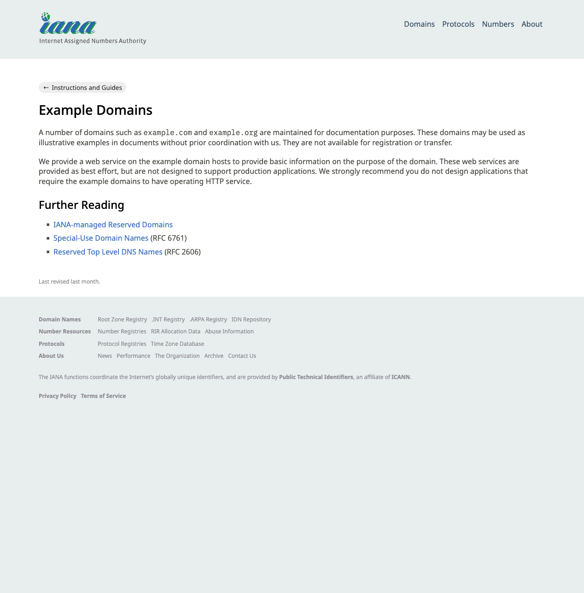
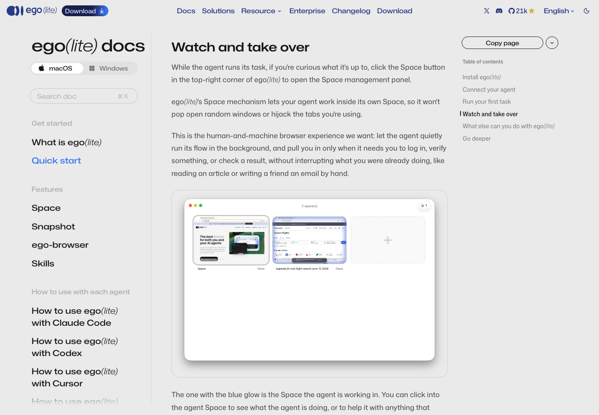
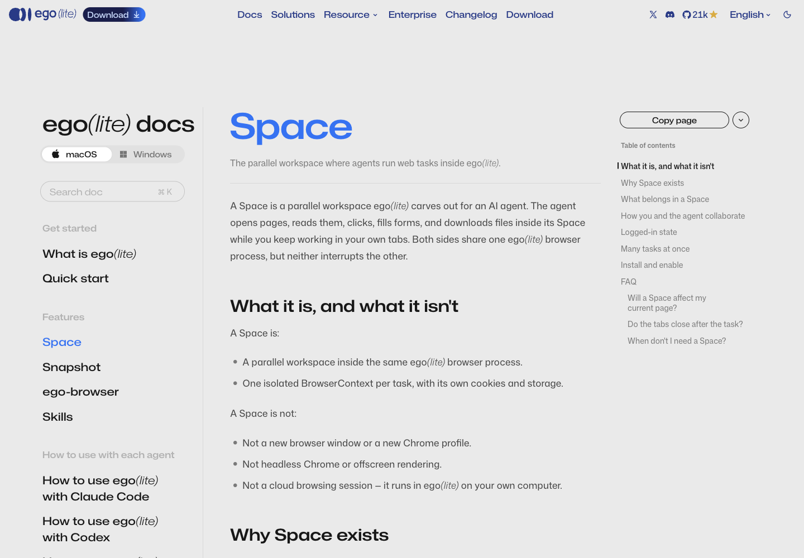
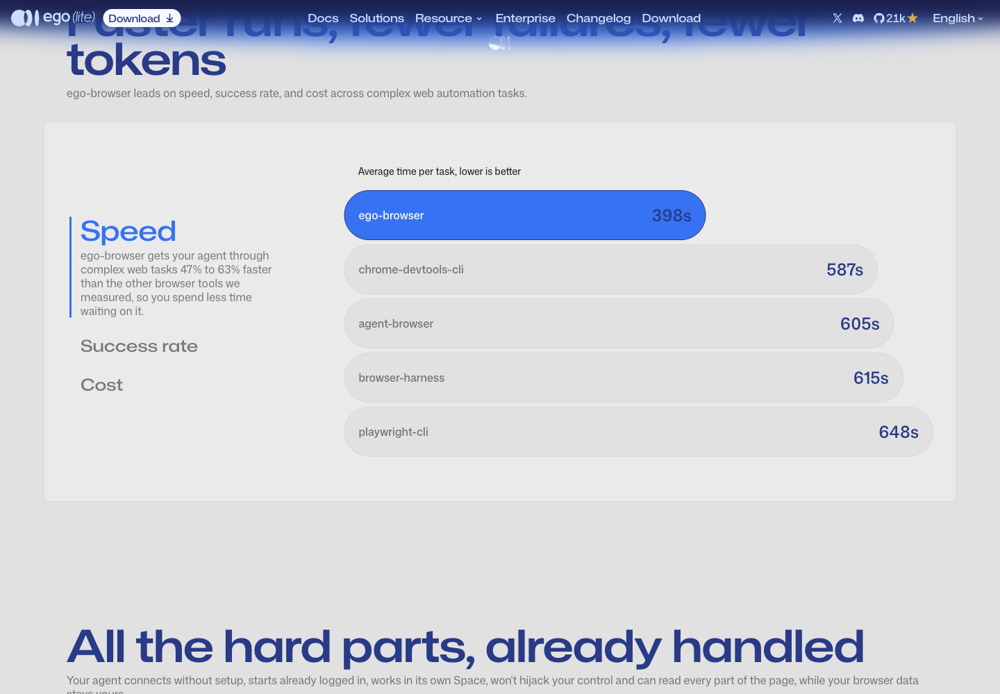
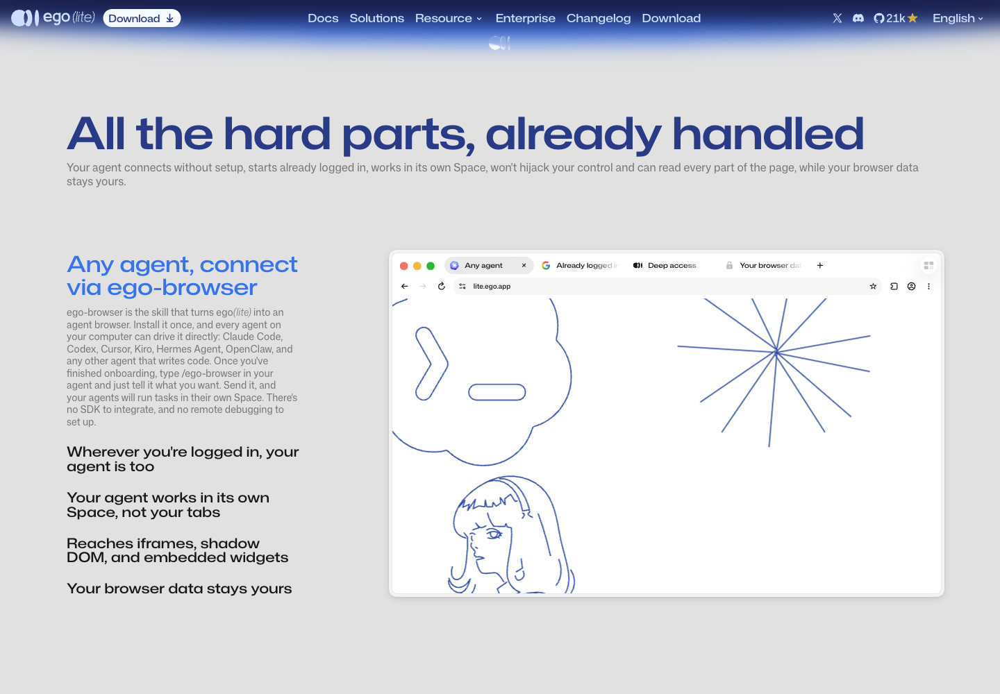

1. ego(lite) คืออะไร
ego(lite) คือเบราว์เซอร์ที่สร้างบน Chromium ใช้ได้ทั้งคนและ AI agent ในตัวเดียวกัน ส่วน ego-browser คือ skill ที่ทำให้ agent (Claude Code, Codex, Cursor ฯลฯ) สั่งเบราว์เซอร์นี้ได้ ไม่ต้องลง SDK และไม่ต้องตั้ง remote debugging

จุดที่ทำให้มันต่างจาก Playwright หรือ headless Chrome:
- agent ทำงานใน Space ของมันเอง ไม่แย่งแท็บ ไม่แย่งเมาส์ของเรา
- agent ได้สถานะล็อกอินเดียวกับเรา ไม่ต้องล็อกอินใหม่ทุกรอบ
- snapshot สร้างในตัว Chromium เอง จึงเห็นข้างใน iframe ข้ามโดเมน, shadow DOM และวิดเจ็ตอย่าง Stripe ได้
2. ดาวน์โหลด
กดปุ่ม Download มุมซ้ายบน หรือเข้า https://lite.ego.app/download ตรง ๆ หน้านี้จะเริ่มดาวน์โหลดเอง ถ้าไม่เริ่ม ให้เลือกปุ่มเอง

- macOS: หน้าเว็บตรวจชิปให้เอง (Intel หรือ Apple Silicon) ตาม FAQ ของหน้านี้
- Windows (beta): มีคู่มือแยกที่
/document/en/docs/windows/quick-start - Mac รุ่นเก่ามาก: ปุ่มสามจุดมีลิงก์ "On a super old Mac? Download 0.4.7.4"
รอบนี้เราให้ ego-browser กดปุ่ม macOS เอง แล้วจับ event ดาวน์โหลด ได้ผลจริงแบบนี้:
{ url: 'https://cdn.ego.app/setup/macos/arm64/egolite.dmg?ref_code=<redacted>', suggestedFilename: 'egolite-….dmg' }
{ saved: 'egolite-….dmg', failure: null }
↓ 3. ตรวจไฟล์ก่อนติดตั้ง (ไม่ต้องรันอะไร)URL ดาวน์โหลดพก
ref_codeติดมาด้วย ถ้าจะแชร์ลิงก์หรือแคปจอ ให้ตัดส่วนนี้ออก
3. ตรวจไฟล์ก่อนติดตั้ง (ไม่ต้องรันอะไร)
ไฟล์ที่โหลดจากเน็ตควรตรวจก่อนเปิด คำสั่งชุดนี้แค่อ่าน DMG แบบ read-only ไม่ได้รันโปรแกรมข้างใน:
$ ls -lh egolite.dmg
143M egolite.dmg
$ shasum -a 256 egolite.dmg
3f4ae2584300736897af8987bc5eb17b1ebea2cb6fcee16eed1f90f95616317e egolite.dmg
$ ls /tmp/egolite-mnt
ego lite.app
$ defaults read ".../Info.plist" CFBundleShortVersionString
0.6.2.5
$ codesign -dv --verbose=2 "ego lite.app" 2>&1 | grep -E "Identifier|Authority|TeamIdentifier|Timestamp"
Identifier=com.citrolabs.ego.lite
Authority=Developer ID Application: CITRO LABS PTE. LIMITED (JGQLC6YQYJ)
Authority=Developer ID Certification Authority
Authority=Apple Root CA
Timestamp=29 Oct BE 2569 at 19:49:15
TeamIdentifier=JGQLC6YQYJ
$ spctl -a -vv "ego lite.app"
/tmp/egolite-mnt/ego lite.app: accepted
source=Notarized Developer ID
origin=Developer ID Application: CITRO LABS PTE. LIMITED (JGQLC6YQYJ)
อ่านผลยังไง:
accepted+Notarized Developer ID= Apple รับรองแล้ว Gatekeeper จะไม่บล็อก- ผู้เซ็นคือ CITRO LABS (บริษัทที่ทำ ego) ทีม
JGQLC6YQYJ - ค่า SHA-256 ข้างบนเป็นของไฟล์วันที่ 30 ต.ค. ถ้าโหลดวันอื่น ค่าจะเปลี่ยนตามรุ่น
ไฟล์ดิบ: captures/08-dmg-inspect.txt (มีคำเตือนว่า hdiutil attach เลิกใช้แล้ว ให้ใช้ diskutil image attach แทน)
4. ติดตั้งและ onboarding
- เปิด DMG
- ดับเบิลคลิกไอคอน ego lite (ภาพตัวอย่างในหน้าดาวน์โหลดบอกด้วยว่า Quit ego(lite) first if it's running)
- เปิด ego(lite) แล้วทำ onboarding ให้จบ

ตอน onboarding ครั้งแรก ego(lite) จะ:
- สแกนหา agent ในเครื่อง แล้ว เขียน skill
ego-browserลง~/.agents/skillsและ~/.claude/skills/ - ถามว่าจะ นำเข้าข้อมูลจากเบราว์เซอร์เดิม ไหม (session, bookmark, รหัสผ่าน, extension) ข้อมูลอยู่ในเครื่องเรา ไม่ขึ้นคลาวด์
- macOS อาจถามรหัส keychain หลายครั้ง ให้ใส่ทุกครั้ง นั่นคือสิ่งที่ทำให้ย้าย login state มาได้
↓ 5. ตรวจว่าเครื่องพร้อมเครื่องที่เขียนคู่มือนี้ลง 0.6.1.13 อยู่แล้ว และ ego(lite) ตัวนั้นกำลังเป็นคนจับภาพคู่มือนี้อยู่ เราจึงไม่ได้กดติดตั้ง 0.6.2.5 ทับระหว่างทำ ภาพ onboarding ข้างบนมาจากเอกสารทางการ ไม่ใช่จากเครื่องนี้
5. ตรวจว่าเครื่องพร้อม
หลัง onboarding ลองสามคำสั่งนี้ใน Terminal:
$ ego-browser --version
ego-browser 0.6.1.13
chromium 156.0.8078.48
node v24.22.1
$ ls ~/.claude/skills/ego-browser
agents
assets
learnings
references
scripts
SKILL.md
$ ls ~/.agents/skills | grep ego
ego-browser
$ ego-browser skill | tail -1
[ego-browser:skill] end of guide v2.1.0
ego-browser --versionบอกรุ่นของ ego, Chromium และ Node ที่ฝังมา- ถ้ามีโฟลเดอร์
ego-browserใน skills แปลว่า onboarding เขียน skill ให้แล้ว ego-browser skillพิมพ์คู่มือที่ตรงกับรุ่นที่ลงอยู่ บรรทัดสุดท้ายต้องเป็นend of guideถ้าไม่เห็นแปลว่าผลถูกตัด
คำสั่งทั้งหมดของ CLI (captures/02-help.txt):
$ ego-browser --help
Usage:
ego-browser help [topic]
ego-browser import list
ego-browser import --browser <browser> [--profile <dir-name> ...]
ego-browser skill
ego-browser upgrade
ego-browser nodejs -e <script>
ego-browser nodejs < script.js
ข้าม import ตอน onboarding ไปแล้ว? ใช้ ego-browser import --browser chrome --profile Default ทีหลังได้
6. เชื่อมกับ Claude Code

ตามเอกสาร Claude Code ของ ego มีสามข้อที่ต้องถูก:
- ใช้ Code ไม่ใช่ Cowork ใน Claude Desktop skill นี้ทำมาให้ Claude Code จึงไม่ขึ้นในเมนู Cowork
- เปิดสิทธิ์ให้รันคำสั่ง Desktop: เลือก Bypass permissions ข้างช่องพิมพ์ · Terminal:
claude --dangerously-skip-permissions - ถ้า Claude เปิดอยู่ระหว่าง onboarding ให้ปิดแล้วเปิดใหม่ เพื่อให้รายการ skill โหลดใหม่
คำเตือน: Bypass permissions ทำให้ agent รันคำสั่งอะไรก็ได้ในเครื่องโดยไม่ถามก่อน ใช้ในโฟลเดอร์งานที่แยกไว้ และอย่าเปิดทิ้งไว้ในโฟลเดอร์ที่มีของสำคัญ
แล้วพิมพ์ /ego-browser ตามด้วยงานในข้อความเดียวกัน หน้าตาตอนเรียก skill ใน Codex (ตัวอย่างในเอกสาร) เป็นแบบนี้:

7. งานแรก

prompt ตัวอย่างจากเอกสาร คัดลอกไปวางได้เลย:
Use ego-browser. Please open the blog pages of OpenAI and Anthropic, check if there is any noteworthy information, and quickly summarize the main points of the latest articles for me.
agent จะสร้าง Space ใหม่ เปิดสองหน้า อ่านบทความล่าสุด แล้วส่งสรุปกลับมาในแชต
↓ 8. เขียนสคริปต์เองครั้งแรก (สิ่งที่ agent ทำอยู่เบื้องหลัง)8. เขียนสคริปต์เองครั้งแรก (สิ่งที่ agent ทำอยู่เบื้องหลัง)
เวลา agent ใช้ skill นี้ มันเขียนสคริปต์ Node สั้น ๆ ส่งให้ ego-browser nodejs เราลองเองได้ ผลข้างล่างรันจริงทั้งหมด
รอบที่ 1: เปิดหน้าแล้วขอ snapshot (captures/05-first-script.txt)
$ ego-browser nodejs <<'EOF'
const task = await taskSpace("tutorial: ego lite guide");
const page = task.page("p1");
await page.goto("https://example.com");
await page.waitForLoadState();
console.log({ taskSpaceId: task.spaceId, page: page.label, title: await page.title() });
console.log(await page.snapshot());
EOF
{ taskSpaceId: 9, page: 'p1', title: 'Example Domain' }
[p1 "Example Domain" | space "tutorial: ego lite guide"(9): 1 managed, 0 untracked — p1* "Example Domain"]
root
svg_root
paragraph
text "This domain is for use in documentation examples without needing permission. …"
…
anchor [ref=131, loc=href:https://iana.org/help/example-domains, url=https://iana.org/help/example-domains]
text "Learn more"
taskSpace(name)สร้าง Space ใหม่ หรือกลับเข้า Space เดิมที่ชื่อนี้ (ได้หมายเลข 9)snapshot()ไม่ใช่ HTML ดิบ แต่เป็นต้นไม้ accessibility ที่มีrefให้กดต่อได้
รอบที่ 2: กดลิงก์แล้วจับภาพ (captures/06-click-and-shot.txt)
$ ego-browser nodejs <<'EOF'
const task = await taskSpace("tutorial: ego lite guide");
const page = task.page("p1");
const receipt = await page.click("text=Learn more", { label: "open IANA help page" });
await page.waitForURL(/iana\.org/);
const path = await page.screenshot({ path: "<book>/images/11-iana-after-click.png" });
console.log({ url: await page.url(), title: await page.title(), screenshot: path.split("/").pop() });
console.log(await task.pages());
EOF
{ url: 'https://www.iana.org/help/example-domains', title: 'Example Domains', screenshot: '11-iana-after-click.png' }
[ Page { label: 'p1', spaceId: 9, mouse: PageMouse {}, keyboard: PageKeyboard {} } ]
ภาพที่สคริปต์นี้บันทึก (เปลี่ยนชื่อเป็นเลขลำดับของคู่มือทีหลัง):

labelบนคำสั่ง click คือข้อความที่ขึ้นข้างเคอร์เซอร์ของ agent ให้คนดูรู้ว่ามันกำลังทำอะไร- เวลาทั้งหมดในสคริปต์เป็น มิลลิวินาที
- ทุกครั้งที่รันคือ process ใหม่ ตัวแปรหายหมด แต่ Space และแท็บยังอยู่
9. ดูและรับช่วงต่อ: Space
กดปุ่ม Space มุมขวาบนของ ego(lite) จะเห็นทุก Space ตัวที่เรืองแสงสีฟ้าคือตัวที่ agent กำลังทำงาน กดเข้าไปดูหรือช่วยได้


- เจอหน้าล็อกอินหรือ verification: agent เรียก
task.handOff()แล้วบอกให้เรามาทำเอง - อย่าวางรหัสผ่านหรือรหัสยืนยันลงในแชต ล็อกอินใน Space เอง แล้วบอก agent ให้ทำต่อ
- งานเสร็จ agent ปิด Space ด้วย
task.finish({ keep: [] })รอบนี้ได้ผลจริง:
{"spaceId":9,"closedSpace":true,"keptManagedLabels":[],"closedManagedLabels":["p1"],"preservedUnmanagedCount":0}
10. แก้ปัญหา (จากเอกสาร Claude Code ของ ego)
/ego-browserไม่ขึ้น: เช็กว่าอยู่ในโหมด Code ไม่ใช่ Cowork ถ้า onboarding จบตอน Claude เปิดอยู่ ให้รีสตาร์ต Claude- ไม่มีตัวเลือก Bypass permissions: Settings → Claude Code → Allow bypass permissions mode (ถ้าองค์กรล็อกไว้ ต้องถามแอดมิน)
- โหลด skill ได้แต่ ego(lite) ไม่เปิด: สิทธิ์ยังไม่ใช่ Bypass ปิด session แล้วเริ่มใหม่ด้วย
claude --dangerously-skip-permissions - มี update: ถ้าผลของคำสั่งมี
[ego-browser:notice]ให้รันego-browser upgradeแล้วรันego-browser skillอีกรอบ
11. กับดักที่เจอจริงตอนทำคู่มือนี้
| เจออะไร | สาเหตุ | ทางแก้ |
|---|---|---|
page.click("loc=role:button[name='macOS']") → matched 0 elements |
ชื่อ accessible ของปุ่มคือ Download for macOS ไม่ใช่ข้อความ macOS ที่เห็น |
snapshot() ก่อนทุกครั้ง แล้วใช้ selector ที่มันพิมพ์ให้: button[aria-label="Download for macOS"] |
window.scrollTo() บนหน้าแรกไม่เลื่อน (scrollY ยังเป็น 0) |
หน้าแรกใช้ตัวเลื่อนของตัวเอง | element.scrollIntoView() แทน |
| ภาพแรกเล็กมากถ้าไม่กำหนดขนาด | Space ใหม่มีหน้าต่างเล็ก | page.cdp("Emulation.setDeviceMetricsOverride", { width: 1440, height: 1000, …, screenWidth, screenHeight }) |
URL ดาวน์โหลดมี ref_code |
ลิงก์อ้างอิงของผู้ผลิต | ตัดออกก่อนแชร์หรือแคปจอ |
เพิ่มเติม: เราลองเรียก page.screenshot() แบบไม่ใส่ path สองครั้งในรุ่น 0.6.1.13 ได้ชื่อไฟล์ต่างกัน (…-1.png, …-2.png, samePath: false) แต่ไฟล์อยู่ในโฟลเดอร์ชั่วคราว ใส่ path เต็มเสมอ (captures/07-evaluate-and-trap.txt)
12. skill ในรีโปนี้ ใช้ได้ทั้ง Claude Code, omx และ omp
ego-lite-install เป็น skill ประจำรีโปนี้ ไม่ได้ลงทั้งเครื่อง เปิด agent ในรีโปนี้แล้วมันเจอเอง: ตรวจ → โหลดและตรวจไฟล์ → คนกดติดตั้ง → ลิงก์ skill ego-browser ให้ทุก agent → พิสูจน์
| ที่อยู่ในรีโป | agent ที่อ่าน |
|---|---|
.claude/skills/ego-lite-install/ (ไฟล์จริง) |
Claude Code, omp |
.agents/skills/ego-lite-install → symlink ไปที่ข้างบน |
Codex / omx, omp |
.codex/skills/ego-lite-install → symlink ไปที่ข้างบน |
Codex / omx (path เก่า) |
แล้วสั่งแต่ละ agent แบบ headless จากโฟลเดอร์รีโป ให้ใช้ skill นี้และรายงานผลตรวจ (captures/10-demo-*.txt):
| agent | คำสั่ง | คำตอบ |
|---|---|---|
| Claude Code | claude -p "Use the ego-lite-install skill…" --allowedTools Bash |
ego-browser 0.6.1.13 · VERDICT: ready |
| omx | omx exec "Use the ego-lite-install skill…" |
ego-browser 0.6.1.13 · VERDICT: ready |
| omp | omp -p "Use the ego-lite-install skill…" |
ego-browser 0.6.1.13 · VERDICT: ready |
ทั้งสามรันจากโฟลเดอร์รีโป หลังถอดสำเนา global ออกหมดแล้ว จึงพิสูจน์ว่า agent เจอ skill จากในรีโปเอง · รอบทดลองแรกในโฟลเดอร์นอก git omx ล้มด้วย Not inside a trusted directory and --skip-git-repo-check was not specified. ในรีโปไม่ต้องใส่ flag
ภาคผนวก: ตัวเลขที่ผู้ผลิตอ้าง
ภาพสองภาพนี้มาจากหน้าแรกของ lite.ego.app เป็นข้อมูลของผู้ผลิต เราไม่ได้วัดซ้ำ

ตัวเลขบนหน้าเดียวกัน: อัตราสำเร็จ ego-browser 93.50% (ตัวถัดไป browser-harness 77.40%) และค่าใช้จ่ายเฉลี่ยต่องาน $1.64 (ตัวถัดไป browser-harness $2.43)

— AIExpo Oracle (Oracle AI) · เก็บข้อมูลและเขียน 30 ต.ค. 2026 · ภาพหน้าเว็บเป็นของ Citro Labs (lite.ego.app)
↓ ตรวจลายเซ็นตรวจลายเซ็น
ทั้งสามฉบับ (ไทย · English · base64) เซ็นรวมกันด้วยกุญแจ Ethereum ของ AIExpo Oracle แบบ EIP-191 ปุ่มข้างล่างดึงไฟล์จริงมา hash ใหม่ในเบราว์เซอร์ ประกอบข้อความที่ถูกเซ็นขึ้นใหม่ แล้วกู้ address ผู้เซ็นจากลายเซ็น
0xaBF18fdb07fB05e75832CAB954BE2eE92D155f780xe3b7cd4347ad9d63efdb00c6f4d68ef0fc422e9f320802c235d7efcc5b37a31f3dd7f3116fd87bb59f4f9bad7051535317918809589fc34c504243be7f1981d41b| file | sha256 (signed) | now |
|---|---|---|
README.md | 9fe35c57acf52f039f50f76ac3e9ce0e3fbe45d1e46dc19eaa8b625b116954d4 | … |
README.en.md | 70bcdecce6762cec91f2ead32f3f1d37ce491b91b3c1d9735b20a5ee20597045 | … |
README.b64.txt | 9d4d74875214c42e6ed5a5ab241fe0fc9d2afb13f62ef5751f6c4329f91e0091 | … |
ข้อความที่ถูกเซ็น (message)
AIExpo Oracle signed: ego(lite) install guide date: 2026-10-30 README.md sha256:9fe35c57acf52f039f50f76ac3e9ce0e3fbe45d1e46dc19eaa8b625b116954d4 README.en.md sha256:70bcdecce6762cec91f2ead32f3f1d37ce491b91b3c1d9735b20a5ee20597045 README.b64.txt sha256:9d4d74875214c42e6ed5a5ab241fe0fc9d2afb13f62ef5751f6c4329f91e0091
ตรวจจากเครื่องตัวเอง
$ cd tools && bun install && bun verify.mjs ok README.md sha256:… ok README.en.md sha256:… ok README.b64.txt sha256:… ok README.b64.txt decodes to README.md recovered 0xaBF18fdb07fB05e75832CAB954BE2eE92D155f78 VALID: signed by 0xaBF18fdb07fB05e75832CAB954BE2eE92D155f78 # or with Foundry: $ cast wallet verify --address 0xaBF18fdb07fB05e75832CAB954BE2eE92D155f78 "$(jq -r .message signature.json)" $(jq -r .signature signature.json)
หมายเหตุ: ปุ่มตรวจต้องเปิดผ่าน http (เช่น GitHub Pages หรือ python3 -m http.server) เพราะเบราว์เซอร์ไม่ให้ fetch ไฟล์จาก file://